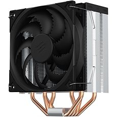
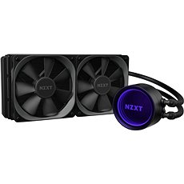

Chlazení
Chladiče na procesor mají za úkol odvádět ztrátové teplo a průběžně tím snižovat teplotu procesoru. Ačkoliv se většina procesorů dodává se základním chladičem, jeho výkon je omezený a nákup chladiče třetí strany bude vždy znamenat snížení teplot i hluku. Nižší teploty procesoru znamenají jeho delší životnost a potenciál pro přetaktování.
Vzduchové chladiče CPU
Hledáte-li výkonnější alternativu k boxovanému chladiči za rozumné peníze, vzduchové chladiče procesorů jsou pro vás tím pravým. Obvykle se pouze o jednoduchou kombinaci velké pasivní části a ventilátoru. Vzduchové chladiče mají řadu výhod. Mezi hlavní patří nízká cena, spolehlivost a snadná instalace. Jsou ale zpravidla velké a někdy mohou kolidovat s dalšími komponentami, typicky s moduly operační paměti. Pasivní bloky vzduchových chladičů často váží i kilogram a větší z nemusí být kompatibilní s řadou běžných skříní. Rozměry je často vyřazují také z kompaktnch sestav nejen kvůli rozměrům. Vzduchové chladiče ke své správné funkci potřebují silný proud vzduchu, který obvykle v miniaturních sestavách není.
Vodní chladiče CPU
Pokud se bavíme o vodních chladičích na procesor, poukazujeme především na řešení All-in-One, která nabízí kompletní chladicí systém připravený k okamžitému použití. Taková chlazení mají výhodu v rozměrech. Celkově sice nejsou nijak kompaktní, místo, ve kterém se kapalina ochlazuje, takzvaný radiátor, se však nenachází v místě procesoru, nýbrž ho lze umístit na různé pozice ve skříni, kam teplo dopravuje kapalina. Díky tomu je chlazení flexibilní a můžeme ho umístit i do stísněných prostor. Vodní chlazení však nelze namontovat do všech skříní, nýbrž pouze do modelů, které jsou pro jeho montáž uzpůsobeny. Je jich značné množství a můžete si je v odpovídající kategorii vyfiltrovat podle parametru „Podpora vodního chlazení“. Vodní okruhy jsou konstrukčně mnohem složitější a křehčí, proto se s jejich použitím pojí více rizik, než kterým budete vystaveni s chladičem vzduchovým, odměnou vám ale bude efektnější i efektivnější systém chlazení.
